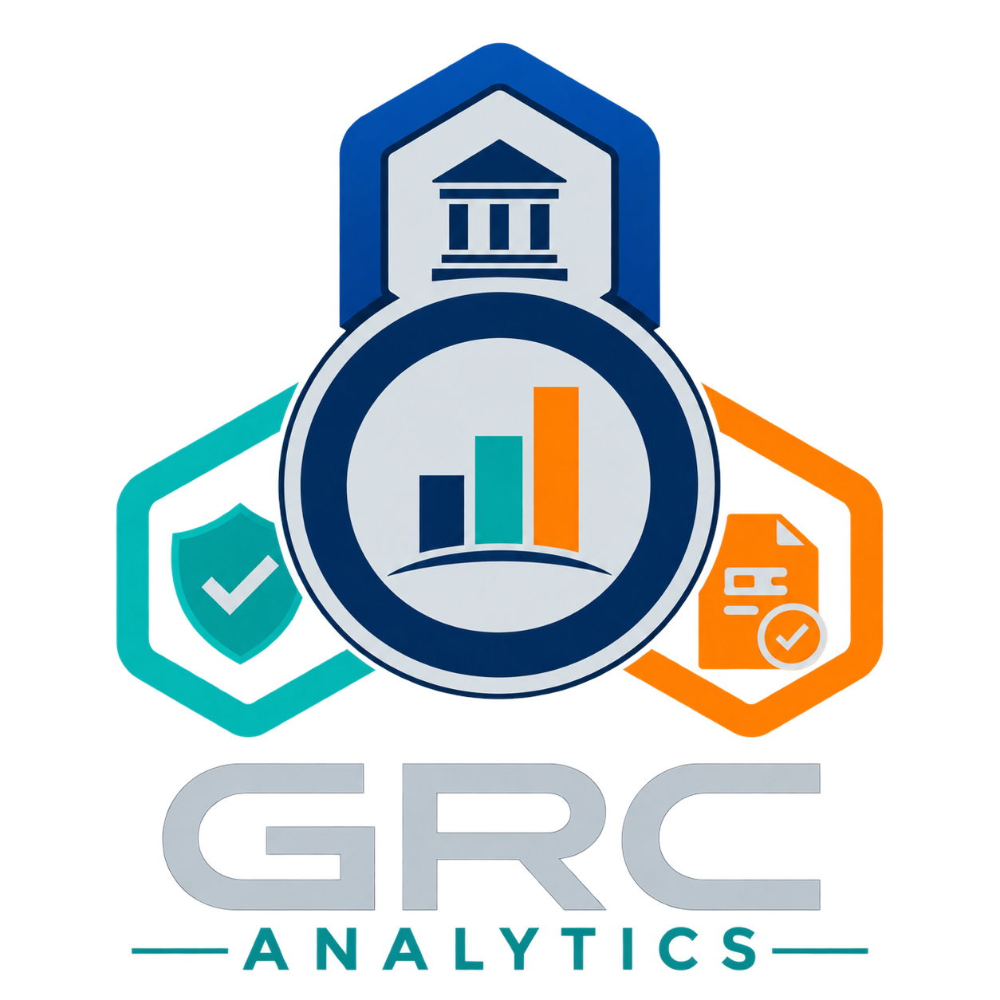

01▦
Dashboards
em Power BI
Visões interativas e objetivas dos indicadores que importam para vendas, financeiro, logística e operação.
Quero um dashboard ↗
Falar com especialista ↗BUSINESS INTELLIGENCE & AUTOMAÇÃO
Transformamos dados dispersos em informações que sua equipe entende, acompanha e usa para agir com segurança.
Digital 64%
Parceiros 36%
TRANSFORMANDO INFORMAÇÃO EM INTELIGÊNCIA DE NEGÓCIO
O QUE ENTREGAMOS
Soluções desenhadas para simplificar a rotina, revelar oportunidades e dar consistência às decisões da sua empresa.
Visões interativas e objetivas dos indicadores que importam para vendas, financeiro, logística e operação.
Quero um dashboard ↗Fluxos inteligentes que reduzem atividades manuais, conectam sistemas e deixam sua equipe livre para o que é estratégico.
Leitura aprofundada para encontrar padrões, riscos e oportunidades escondidos na rotina da empresa.
ACOMPANHAMENTO CONTÍNUO
Um dashboard útil acompanha a mudança da sua operação. Após a entrega, seguimos próximos para aperfeiçoar indicadores, incluir visões e manter tudo confiável.
VAMOS CONVERSAR
Conte o que a sua empresa precisa melhorar. Retornaremos para entender o momento do seu negócio e construir o melhor caminho.